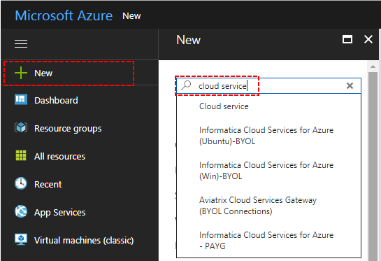

Pdf Exports in Azure Websites¶
Introduction¶
Izenda utilizes the EVO HTML to PDF Converter for Azure to provide pdf exporting in Azure websites. This feature requires the use of an Azure Cloud Service. The high-level flow is illustrated below.
Installing and Configuring the Azure Service¶
Required Components¶
There are two components needed for the Azure cloud service.
These components as well as the installation guide this document is based on can be downloaded freely at the link below: http://www.evopdf.com/Downloads/Support/Archive/EvoHtmlToPdf-Azure-v6.16.zip (Please be sure to use this version)
Installation¶
Login into your Microsoft Azure portal and create a new Cloud Service.
In the first screen select a DNS name for your cloud service and then select a package.
In the next screen choose a deployment label and choose the EvoHtmlToPdfAzureService.cspkg file for package option and ServiceConfiguration.Cloud.cscfg file for configuration option. Enable the Deploy even if one or more roles contain a single instance option and finish the wizard. The deployment process may take several minutes.
When the deployment has completed, navigate to the cloud service dashboard. Under the Properties > Input Endpoints, you can find the service IP address and port number. You will use this information configure Azure exporting in Izenda.
Configuring the Izenda instance¶
After the service has been configured, you must configure the Izenda application to use the service. The settings below are in the web.config file.
<configuration>
<configSections>
<section name="evoPdfSettings" type="Izenda.BI.Framework.Models.Exporting.EvopdfConfiguration" />
</configSections>
<evoPdfSettings cloudEnable="true">
<azureCloudService server="120.0.0.1" port="40001" servicePassword="" />
</evoPdfSettings>
</configuration>